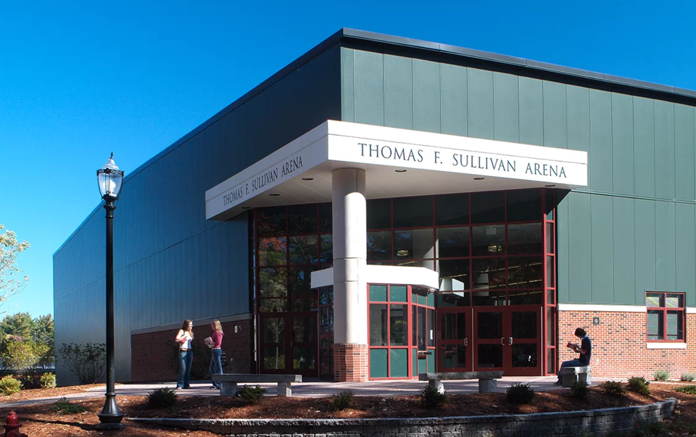
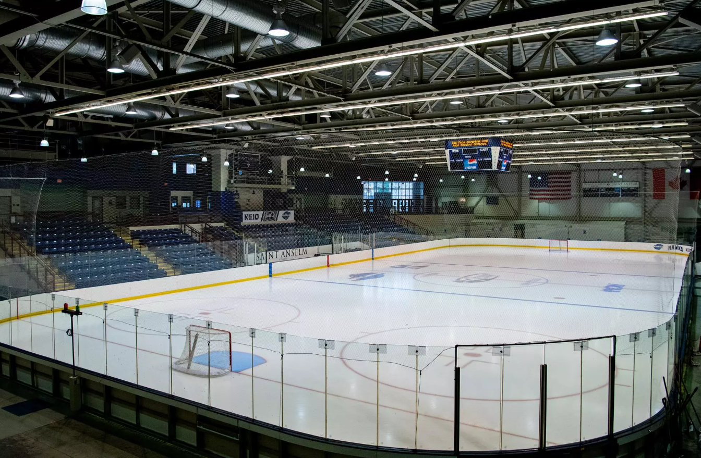

Sullivan Arena is the home rink for the Hawks. It is where both the St. Anselm Women's and Men's Hockey team practices and plays games. The College's club teams also utilize the arena along with other youth programs. The arena provides a great atmosphere for players and fans.
The rink's ice has a smooth glide as it is well maintianed by the rink manager. The rink includes the college teams Locker rooms along with a few others. The stands are huge to make for large crowds of people during the games. An athletic training room for the athletes is also avalible downstairs with the lockerooms. There is also an gym avalible for use in the rink.
The rink keeps it's audience involved with the games with its loud music, exciting games and delicous food from the snack bar! Sullivan also hosts Graduations and school dances during the year. The arena is located on Saint Anselm's campus.